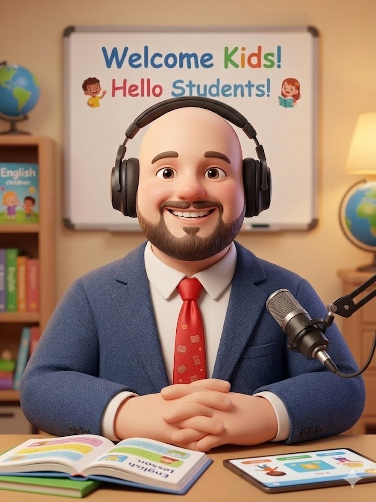
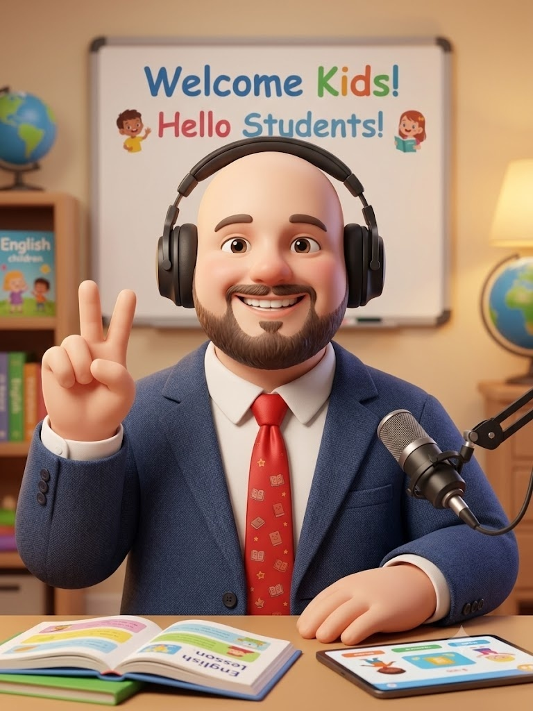

Уроки английского для взрослых и подростков. От нуля до свободного общения.
Записаться на пробный урок

80% времени урока говорите вы, а не я. Никакой скучной зубрежки правил.
Программа строится под ваши цели: для работы, путешествий, переезда или экзаменов.
Разбираем живой английский по сериалам, подкастам, мемам и статьям, а не по старым учебникам.
3 000 ₽ / 60 мин
Персональный подход, фокус на ваших целях и максимальная практика говорения.
1 499 ₽ / 60 мин
Разговорный формат, работа в парах, мотивация от единомышленников. Идеально для живого общения.
Артем Олегович - это учитель с которым надо начинать изучение языка! Способен влюбить ребёнка в язык, заинтересовать, замотивировать! 🤗 Мой сын занимался 2-3 года: в группе, индивидуально. И это всегда было увлекательно для ребёнка! До сих пор учителя, тестирующие наш уровень английского, отмечают у ребёнка свободу и отсутствие страха говорить. Это очень ценно! Спасибо вам!
Артем Олегович, Вы вообще легенда! Вы меня не только к ЭГЭ подготовили, но и посодействовали в поиске материалов для сдачи экзамена TOEFL. Вы и Мария Сергеевна очень сильно мне помогли с моим переездом в США!!Очень добрый и понимающий учитель и человек, у которого приятно учиться и перенимать информацию! Очень приятно было у Вас учиться! Очень сильно благодарен за все!!!!
Артем Олегович - прекрасный педагог! Был учителем в школе у сына в первом и втором классе. Это были увлекательные уроки и отличный результат! А мотивация долларами - отличная фишка :) С удовольствием, при возможности, продолжили бы заниматься индивидуально!
Артём Олегович Коровкин - один из самых запоминающихся преподавателей из моей школьной жизни. С ним не только можно продуктивно поработать, где Артём Олегович всегда подскажет, поможет, но и просто хорошо провести время как в школе, так и вне школы, где кстати Артём Олегович также старается общаться на Английском языке, помогая развивать навыки живого общения! Уроки Английского с Артёмом Олеговичем я не забуду никогда!!!
I just wanted to express my opinion and say honestly about Artem Olegovich. He is clearly a fabulous teacher, who can courage any student to study his subject with passion. Actually, I have never seen a real professional who would be not only a great teacher, but a cheerful and nice person as well. This description fits Artem Olegovich on one hundred percents! What’s more, he is quite flexible in communication, what makes his lessons interesting, while he can get along with his students. I really recommend him as a private tutor for a person with any level!
Разборы живого английского, полезные лайфхаки и юмор без зубрежки.
Подписаться на каналЗапишитесь на бесплатную консультацию-знакомство: